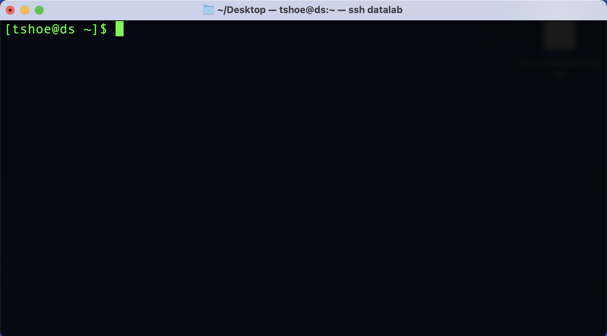
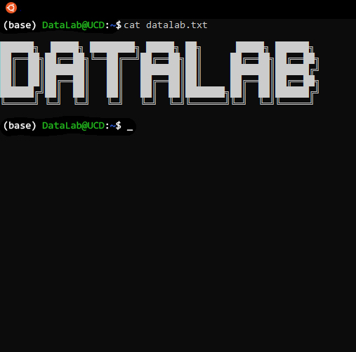

1 Working with the Command Line
To use the command line, we need to launch a special program. Mac users will use an application called “Terminal,” which ships by default on macOS. To launch Terminal, go to:
Applications -> Utilities -> Terminal
When you launch the application, you will see something like this:

Windows users will use WSL and Ubuntu. Instructions for installing this program are in the second section of this workshop reader.
To launch WSL/Ubuntu, go to:
Click on the Windows Start Menu and search for “Ubuntu”
Alternatively,
Click on the Windows Start Menu, select Programs, and browse to Ubuntu
When you launch the application, you will see something like this:

1.1 The Anatomy of the Command Line
While the command line can look intimidating to those raised on a GUI, it’s important to know that both of the programs above are interfaces in the same way that your computer’s default windowing system is an interface. That is, even though a CLI is something of a bare bones representation of your computer, it too relies on a series of assumptions and metaphors that serve to frame how you interact with your computer. Using the CLI may feel strange at first, but part of that feeling comes from not being acclimated to the way it represents a computer.
For example, instead of pointing and clicking on things in your computer, as you’d do with a GUI, you type in your commands with a CLI. In this way, a CLI is more like a typewriter than it is a desktop (an even better analogue would be a teleprinter).
To see this, let’s return to the window that opens when you start Terminal or Ubuntu.
Everything that will happen in this window happens on a line-by-line basis. Here,
we see the command line prompt, where you’ll type your commands. But before
we do so, let’s point out some valuable information contained within the prompt
itself. The beginning of the line, tshoe@ds, tells us the current user (tshoe)
and current computer (ds). This may seem redundant, but with the command line
it is possible to interact with remote computers via a network, so it can be
helpful to have this information displayed as a reference point.
The bit of information after the colon (in this example, the ~ character) tells
us where in the computer’s filesystem we are. We’ll discuss this later. For now,
just keep in mind that you can look here to find your current location. In this
case, ~ means you are in your home directory.

After the location, we see the $ character. It is an indicator that lets you
know the command line application is waiting for you to enter something. (Note
that you do not need to type this character, it will appear automatically, but
the examples below include it to emulate what you’ll see onscreen)
Depending on your system and/or command line interface, you may or may not also
see a solid or flashing box that appears after the prompt character. This is a
cursor position indicator and it tells you where the current cursor is in
the terminal. This is useful if you need to go back and correct and error.
Since you can’t click around with a mouse in a CLI, you’ll have to use your
computer’s Left and Right arrows to move the cursor to your desired location
and make any changes from there.
1.2 Interacting with the Command Line
Now we can enter some commands, which is simply a matter of typing them in after the prompt. For example:
$ echo…will print back to screen any text that you supply to the command. It literally echoes your text:
$ echo "Hello world!"
Hello world!
$To execute this, or any command, you simply hit the Return/Enter key on your
keyboard. You’ll see that when you execute a command, the system will perform the
indicated operation, print any output from that operation to screen, and deliver
a new command line prompt.
If you want to see what files and folders are in your home directory, you can
use ls:
$ ls
backups data.csv jupyter_notebook.ipynb project_folder
$Want some more information about those files and folders? You can modify the base
functionality of the ls command—indeed, you can do this for many such
commands—with a flag. We do this by adding a dash (-) and then (typically)
a letter or combination of letters.
ls -lhWill print information about the size, permissions, and date of directory contents in a human-readable form:
$ ls -lh
drwxrwxr-x 2 tshoe tshoe 4.0K Jun 21 23:30 backups
-rw-rw-r-- 1 tshoe tshoe 28K Oct 4 20:42 data.csv
-rw-rw-r-- 1 tshoe tshoe 6.2K Aug 27 22:44 jupyter_notebook.ipynb
drwxrwxr-x 8 tshoe tshoe 4.0K Oct 4 21:44 project_folderNote that depending on your particular system and/or command line interface, things might look slightly different on your computer. However, the basic presentation and function as described above will be the same.
1.3 Command Syntax
As you can see, the syntax of commands is straightforward. Commands use a
space to delimit their different components, and flags are called with a dash
(-). When put together, these components look like so:
$ [command] [optional flags] [file, data, or other pointer on which to run the command]There is one caveat to this: because commands use spaces to delimit their
components, you can run into problems when running commands on files with spaces
in their names. Your command line interface program will interpret that file’s
spaces as separate components and an error will almost surely result. If you’re
running a command on a file with a space in its name, you’ll need to escape
that space with \.
This will throw an error:
$ [command] file name.txtThis will not:
$ [command] file\ name.txt1.4 Stopping a Command
Did you do something that causes your computer to print a million lines on screen?
Did you decide you don’t want that file copied to a new location, and it’s still
in the midst of transferring? You can interrupt any command with CTRL+C.
This will stop whatever current process is running in your interface.
While you can stop a command, for the most part it isn’t possible to undo a command. Please take care to know exactly what you’re running and what you’re running it on, especially when it comes to modifying or deleting things on your computer.
1.5 Common Command Line Commands
During our hands-on workshop session we will practice using several commands. Be prepared to have this page ready as a reference during class to make things easier.
| Command | Command Name | Function |
|---|---|---|
| ls | List | Lists all files in the current directory. |
| ls -l | List with Long flag | Lists additional information about each file. |
| ls -a | List with All flag | Lists all files, including hidden files. |
| pwd | Print Working Directory | Prints the current working directory. |
| mkdir | Make Directory | Creates a new file directory. |
| cd | Change Directory | Navigates to another directory on the file system. |
| mv | Move | Moves files. |
| cp | Copy | Copies files. |
| rm | Remove/delete | Deletes files. |
| man | Manual | Opens the manual page for another command. |
For a more complete list of Unix Commands, see the Unix Cheat Sheet.